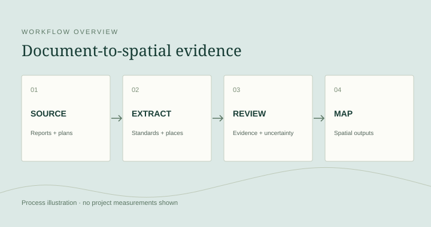

Organize
Bring source documents and metadata into a consistent inventory.
Case study 01 / Climate risk
Making flood-protection evidence easier to find, compare and review.

The question
Flood-defence information is often dispersed across engineering reports, municipal plans and other documents. Place names, protection standards and infrastructure descriptions need to be connected before they can support consistent spatial review.
My contribution
I develop document-review and extraction workflows, organize protection and infrastructure evidence, and prepare geospatial outputs for Canadian flood-defence case studies. My work records source references, confidence and missing information so that reviewers can examine the basis of a protection claim.
The approach
Bring source documents and metadata into a consistent inventory.
Identify protection standards, infrastructure descriptions and locations.
Retain source evidence, uncertainty and gaps for analyst checks.
Prepare tables, maps and spatial files for comparison and further validation.
Outputs
Document extraction and spatial-output workflows are developed. Spatial validation and downstream model integration are separate stages of the research; this case study does not report a validated flood-loss model.
For a discussion of methods, contributions or collaboration, get in touch.
Contact Kwaku Download portfolio ↓